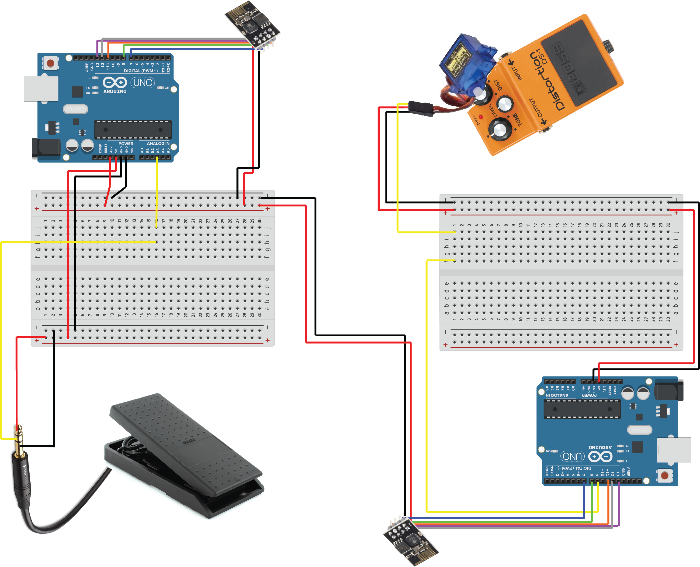
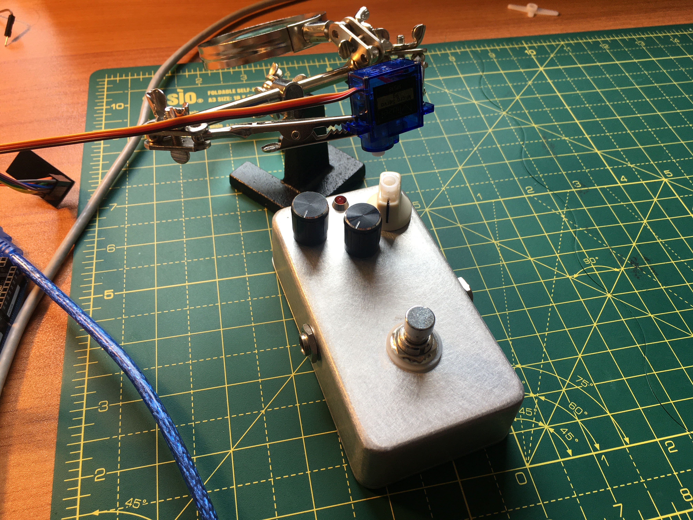

This week, I had more time to figure out the specifics for my final project. After exchanging some emails with Jim and talking with Rob, I decided to go with the (initially not-as-satisfying) solution of just having a servo motor at the end of my circuit controlling the knob on an analog pedal.
Given the constraints right now, my goal is to have a working version of this with 1-2 MIDI pedals and 1-2 motors.
—I don't actually own more than one MIDI expression pedal, though, so the other input device will likely be a MIDI cue pedal posing for one or acting as a trigger that turns the analog pedal on and off.—
Additionally, some compatibility issues between my computer (using Catalina on a MacBook) and some of the boards have made me decide to work only with the Arduino boards I have. This has proven much more reliable just in terms of board recognition and compliling, so it seems like a practical solution for now. Besides the UNO, I have repurposed an Arduino Mega a friend had lent me to control something I'm not using anymore.
So, I will be working with a MIDI expression pedal (essentially as a potentiometer) with an Arduino UNO at the input end, connecting via radio with our nRF24L01's to an Arduino Mega at the output end to control a servo.
Here is a CAD model of the most simple version of this circuit:

Although I had already kind of achieved something very similar to this using different boards in the past (see weeks 9-10) as a prototype for what became a failed attempt at the project I had initially planned, I have been having a little trouble getting the two boards to communicate between each other in the day or two since I decided to switch boards for the Mega.*
So far, it looks like this issue might be attributed to this particularity of the RF24 library with the Mega, which I am hoping shouldn't be too hard to solve.
It should be stated that one of the other reasons for using a Mega for all this is the future potential of hooking this up to many more servos to control many more pedals. This is partly why I am insisting on the Mega.
As for the way I am currently thinking of connecting the servo with the knob on the analog pedal, right now I just took one of the wings and cut it to leave only the little piece that goes into the motor's built-in screw, superglued that to a knob, placed that knob on the pot at the pedal, and tried holding the servo using helping hands for soldering, like this:

In the future, if we regain access to the lab, it would be cool to put together a chassis that can hold several servos using maybe scrap metal lying around, kind of like the inverse of a guitar pedal board that would look down and connect to different knobs on different pedals. That, of course, will for now be just a possible future enhancement to the project.
---
One thing that is left for me to solve at this point and may seem like a minor problem, but which has been troubling me in the past few days, is that I want this to be something that can work in a quiet environment. I mean, I want to be able to hook up these pedals to instruments that aren't necessarily very heavily amplified and the servos themselves make quite a bit of noise. I assume this will be a problem with all geared motors, but if anyone knows of specific models that are designed to be silent or super quiet, that would be great to know!
Again, this isn't really something to solve for right now, but it would be good to know for the future, when I actually want to implement this and use it in a concert (when we can have concerts again! :'( ).